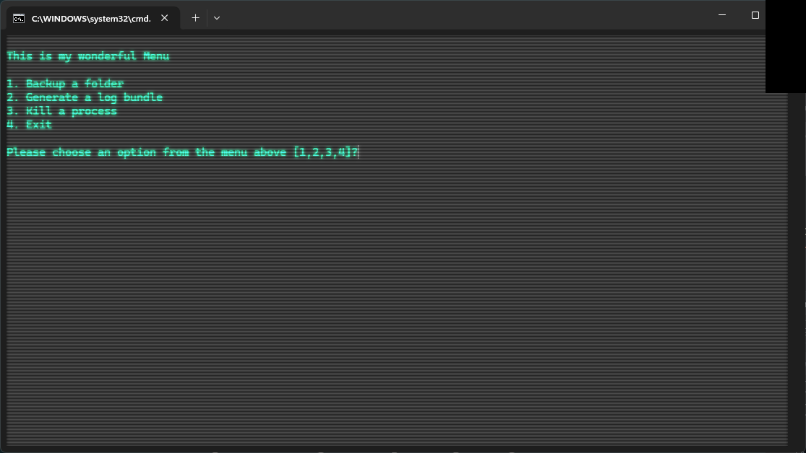

Mini Ops Toolkit
A menu-driven Windows batch script that creates a run folder, performs basic backups, and generates logs for repeatable IT tasks.
A few projects and concepts I’m building as I learn.
A menu-driven Windows batch script that creates a run folder, performs basic backups, and generates logs for repeatable IT tasks.
Simple script for creating folders and adding logs to those folders.
